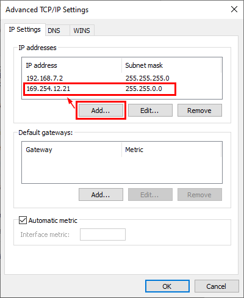

MSCP Firmware Update Instructions — Instructions on how to update the firmware of MSCP devices
The MSCP runs a dedicated firmware which is programmed onto the device. The firmware is continuously maintained and updated by Speedgoat. This document explains the steps necessary to update the firmware of Speedgoat MSCP devices. Firmware updates are included with new versions of the Speedgoat I/O Blockset.
On one EtherCAT bus, multiple MSCP devices can be connected in a daisy chain using Ethernet cables. The devices shall remain connected in the same way for the update process. All devices of one EtherCAT bus will be updated consecutively.
Open an MSCP Setup Block and add/remove devices to match the number of connected MSCPs (the slot specific module type configuration is not needed for the update process). Switch to the Utilities tab and click the Start Firmware Update button.
A model will be generated and automatically deployed to the target machine to switch all configured devices into flash mode. MSCP devices must be in flash mode to receive a firmware update.
Ensure all MSCPs and the real-time target machine are powered on and properly connected with Ethernet cables.
Confirm that all of the MSCP devices have switchted into flash mode by checking the SYS LED on each device, which should blink yellow.
Only proceed to the next step if all devices have switched to flash mode. If only some devices have switched, power-cycle all MSCPs and repeat this step.
The firmware update will be transferred from the host computer via the real-time target machine to the MSCP devices.
Identify the network adapter used to connect to the target machine and add a secondary static IP address from the link-local address range (169.254.x.x). This is necessary for the host computer to communicate with MSCP devices in flash mode.
For more info on how to configure IP addresses in Windows, refer to the Appendix section at the bottom of the page.
Wait at least 10 seconds for the new IP settings to take effect.
Initiate the firmware transfer by continuing with the on-screen instructions. The remaining update process is automated. Observe the MATLAB Command Window for status updates. Verify that all of the devices are detected and updated one after the other.
The flash process can take up to two minutes per device. Do not interrupt the update process at this point. However, if any issues occur during the update, these can usually be fixed by repeating the flash process.
Once the update process is finished, verify that all the connected devices have updated successfully. It can occur that one or more devices were skipped during the update due to network discovery issues. This is indicated by the SYS LED still blinking yellow on affected devices.
If a MSCP device still has a yellow blinking SYS LED, connect that device directly to your real-time target machine and disconnect any cable from the second Ethernet port of the device, to achieve a single point-to-point connection. Then, click "Retry" to update only this device. Repeat this step for all devices which were skipped before.
To communicate with MSCP decives during a firmware update, the Windows Network Adapter in use must be assigned a link-local IP address (169.254.xxx.xxx).
In the Windows Network and Sharing Center, configure the Internet Protocol Version 4 (TCP/IPv4) Properties for your Ethernet controller as follows:
Open the Advanced... settings and add a link-local IP address:
